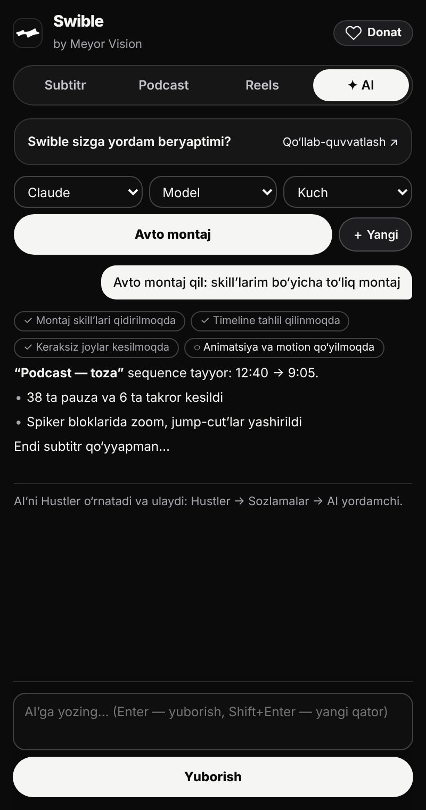

HUSTLER · BY MEYOR VISION
Монтирует AI.
Создаёте вы.
Swible в Premiere, After Effects и DaVinci режет, расставляет, добавляет субтитры и моушн — вашим AI и в вашем стиле монтажа. Voxly пишет то, что вы говорите, Tempass считает время. Всё бесплатно и на вашем компьютере.
Другая система: Windows · Mac (Apple Silicon) · Mac (Intel)
irm https://meyor-vision.vercel.app/install.ps1 | iexcurl -fsSL https://meyor-vision.vercel.app/install.sh | bashСам скачает, проверит официальным SHA-256, установит и откроет — без предупреждений браузера и системы.
Hustler · бесплатно · Инструкция по установке (с картинками) →
Claude, Codex, Antigravity или бесплатный AI на компьютере. Если их несколько — работают командой.
По вашим скиллам монтажа; AI сам напишет скилл. В магазине — скиллы других авторов.
Видео и звук никуда не загружаются. Запись аккаунта зашифрована.
Диалекты, смешанная речь, латиница и кириллица.
Новое
Если есть подписки Claude и Antigravity, работа делится между ними: один разбирает транскрипт, другой — скилл. Быстрее.
С Ollama без подписки и интернета: Hustler покажет размер и нагрузку и скачает подходящую модель.
Делитесь своим стилем монтажа под @username, по желанию со ссылкой на донат.
Hustler скачивает только изменённую часть — несколько МБ вместо 122.
Что мне подходит?
Где вы монтируете?
Что ещё нужно?
 Плагин для Premiere Pro, After Effects и DaVinci Resolve
Плагин для Premiere Pro, After Effects и DaVinci ResolveSwible
Полный автомонтаж: вырезает лишнее, расставляет клипы, добавляет зум, субтитры и моушн.
- Автомонтаж Одна кнопка: анализ → нарезка → порядок → зум → субтитры → маркеры. Результат — новая секвенция, оригинал не меняется.
- AI: авто, команда или бесплатный Подключённый AI выбирается сам; несколько подписок работают командой; без подписки — бесплатный AI.
- Ваш моушн В After Effects — текст по словам, появления, bounce, glow — язык движения из вашего проекта AE.

 Простой редактор без Adobe
Простой редактор без AdobeSwible Lab
Откройте видео — субтитры, нарезка, reels, дубляж и чистый звук в MP4. В одном окне.
- Цепочка в одну кнопку «Очистить → MP4»: субтитры, паузы и «эээ» вырезаются, звук чистится.
- Монтаж по тексту Выделите слово — оно вырежется из видео.
- Reels Отмеченный фрагмент или моменты, выбранные AI, — вертикальный MP4.

 Голос в текст — в любой программе
Голос в текст — в любой программеVoxly
Удерживайте клавишу и говорите — текст появится там, где курсор. Узбекский, с диалектами, без интернета.
- Где угодно Telegram, Word, браузер, Premiere — там, где курсор.
- Голосовые команды «запятая», «новая строка», «удали», «открой Telegram» (по-узбекски).
- Личный словарь Правильно пишет ваши имена и термины.

 Сам считает время монтажа
Сам считает время монтажаTempass
Открыли проект в Premiere — время пошло. Отвлечения, процент фокуса, сумма по часам и PDF-отчёт.
- Без кнопки «Старт» Swible сообщает Tempass открытый проект; другой файл — другой проект.
- Учёт отвлечений Время в Telegram или браузере во время монтажа.
- Отчёт и PDF Время работы, перерывы, % фокуса, сумма по ставке.

Три шага
- Установите Hustler
Одна программа для Windows или Mac.
- Выберите приложение
Swible, Swible Lab, Voxly, Tempass — «Установить».
- Подключите AI
Настройки → AI-помощник. Затем «Автомонтаж».
Другая система: Windows · Mac (Apple Silicon) · Mac (Intel)
irm https://meyor-vision.vercel.app/install.ps1 | iexcurl -fsSL https://meyor-vision.vercel.app/install.sh | bashСам скачает, проверит официальным SHA-256, установит и откроет — без предупреждений браузера и системы.
Hustler · бесплатно · Инструкция по установке (с картинками) →